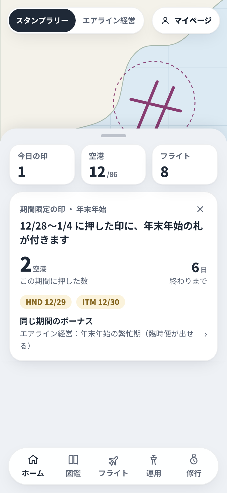
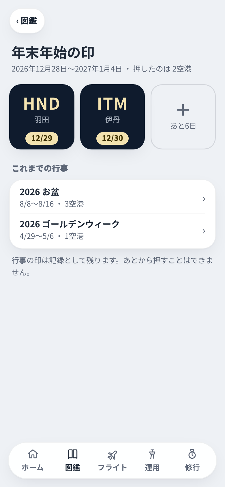
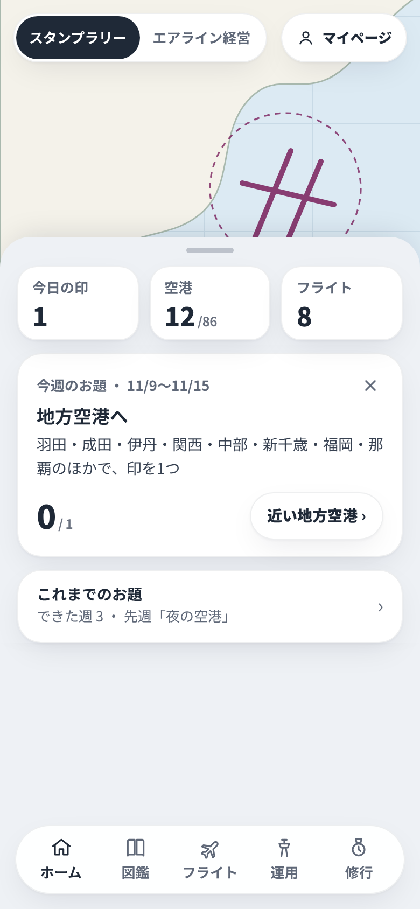
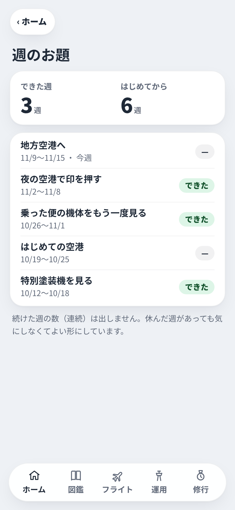
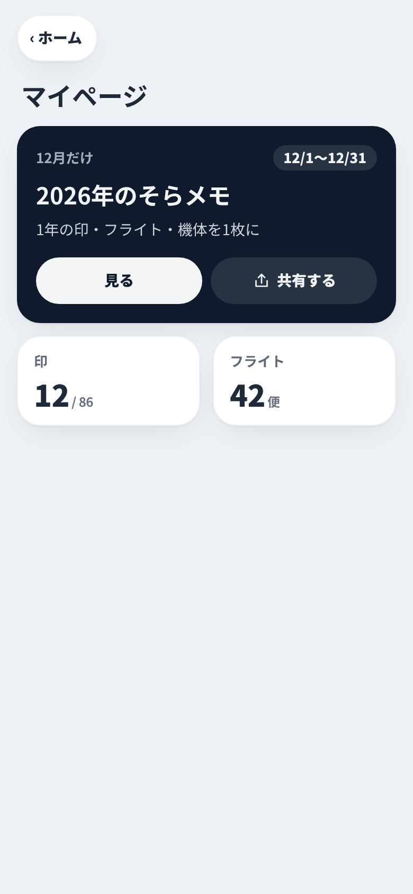
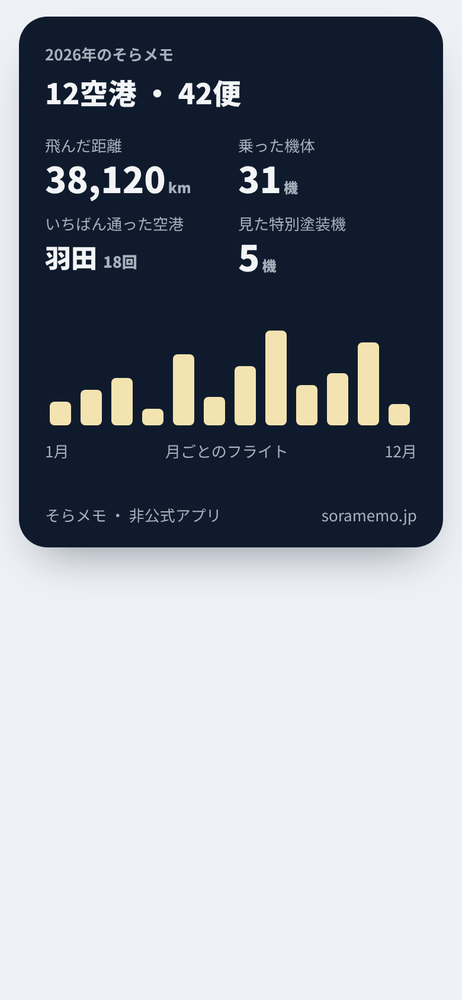
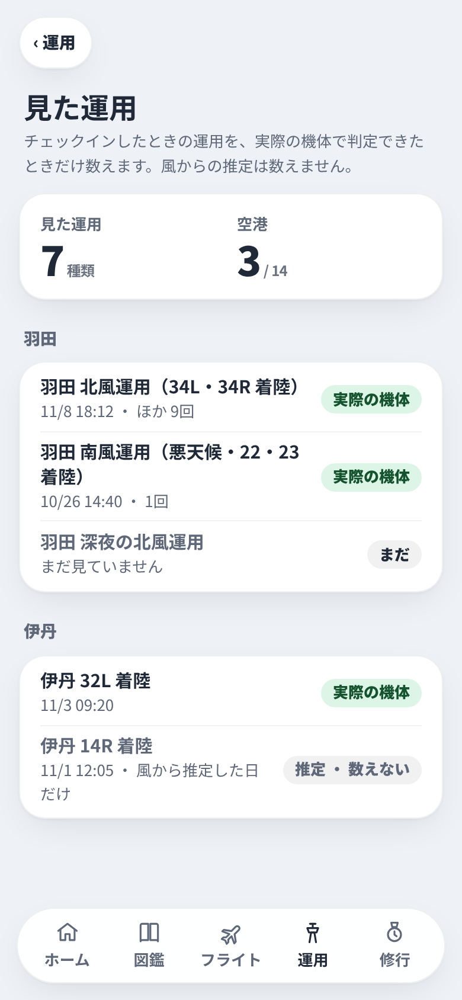
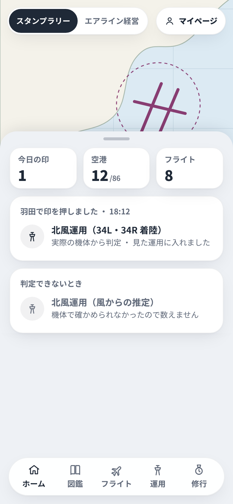
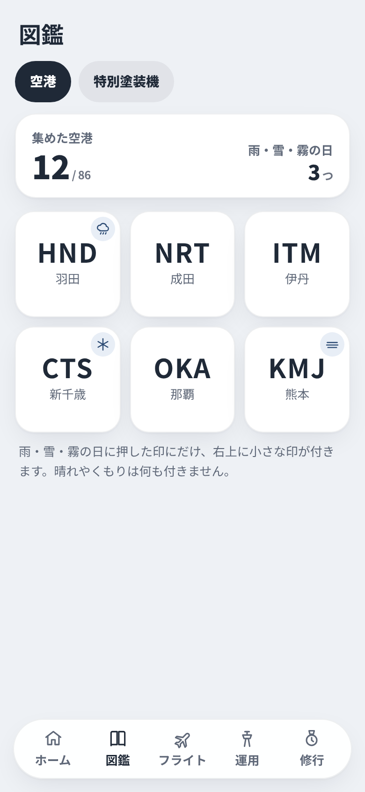
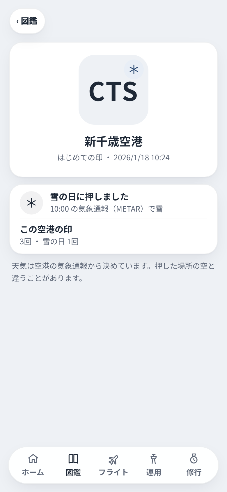

11/8 の本人「却下したやつをもう一度見直したい」による検討用の画面案。今の全部乗せ（隠せる）・夜の画面・たまった記録（天気・運用・便の実績・全機の便）がある前提で、当時より良い形を考えた。アプリには入れない。各案2枚、幅390、今の昼の見た目。
| 元の案 | 元の却下の日付 | 今回の形 | 良い点 | 困る点 | 画面 |
|---|---|---|---|---|---|
| 1 季節のスタンプ | 10月（日付の記録なし。11/5 に決まりへ写した時点で却下済み） | 行事のときだけ出る期間限定の札（年末年始・GW・お盆・SW）。ふだんの印に札が付くだけ。経営の繁忙期と同じ期間 | 年に数回だけなので重くない。経営の季節の需要とつながる。数は86のまま | 取り逃した人が残念に思う。行事の期間を毎年決める手間 |   |
| 2 今日のお題 | 10月（日付の記録なし。同上） | 週に1つのお題。ホームのかたまりで × で外せる。報酬なし・連続の記録なし | 毎日追われない。今の記録（地方空港・夜・特別塗装機など）だけで作れる | お題の種類が少ないと飽きる。週に1回も空港に行かない人には遠い |   |
| 3 空のカレンダー・年間まとめ | 10/19（入れて同じ日に取り消し） | 12月の1か月だけマイページの上に出る1年のまとめ。共有できる4:5の1枚 | ふだんの画面を増やさない。共有で広告にもなる（非公式アプリと明記） | 乗った便が少ない人には寂しい1枚になる。12月に作る処理が要る |   |
| 4 運用を集める印・バッジ | 10月（日付の記録なし。同上） | 「見た運用」の記録の一覧。実際の機体で判定できたときだけ数え、推定は灰色で数えない。印・バッジは付けない | 10/15 からチェックインのときの運用を残しているので、すぐ作れる。正直な数え方 | 珍しい運用を追う人が出る。14空港の外は数えられない |   |
| 5 天気の印 | 10/12（天気の実績と印に付く天気を外した） | 雨・雪・霧の日に押した印にだけ、右上に小さな印。晴れ・くもりは付けない。天気の実績は作らない | METAR の記録（毎時）がある。ふつうの日の印は今のまま | 空港の天気と本人の空が違うことがある。METAR のない空港は霧が分からない |   |
ほかの却下（窓側の席ガイド・機体と運航の実績・出発案内板風・新造機・航空ニュース）は今回の指示の外なので描いていない。